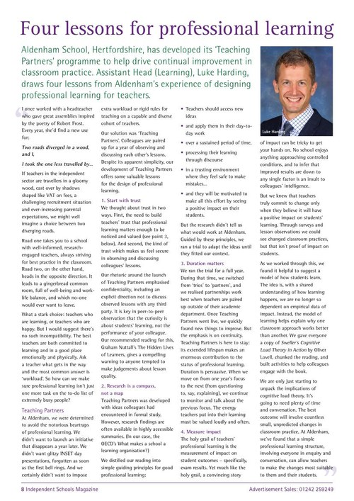
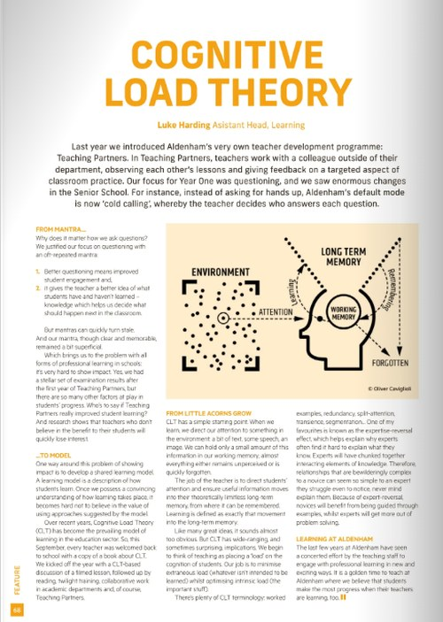
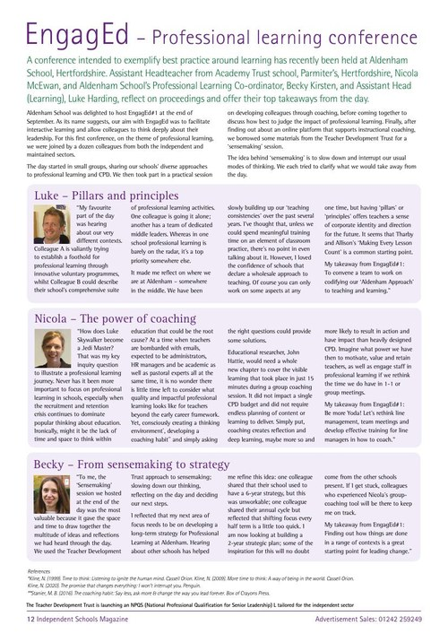

Luke Harding
I bring 20+ years' classroom experience and a decade in senior leadership focused on professional learning.

Why I Do This
After years of delivering and evaluating professional learning, I grew frustrated with approaches that felt unambitious, incoherent and disconnected from the reality of schools. Too often, professional learning amounts to a disparate collection of tools and models, aiming for participant satisfaction rather than meaningful professional growth.
I wanted to create something more thoughtful, more challenging, and more human.
I pursued this through an MBA focused on professional learning, the school as a learning organisation and building effective middle leadership teams. I considered this research base in the light of two decades’ practice in schools.
I left a wide-ranging senior leadership role, spanning professional learning, teacher development, SEND and EAL provision, so I could bring my experience directly to other schools.
I have served as Head of Learning, Head of Sixth Form, acting SENDCO, Director of English and House Co-ordinator. I hold a First Class degree in English Language and Literature from Oxford University, an MBA in Educational Leadership (Distinction) and NPQSL from UCL.
Expertise
- Helping struggling teachers
- Solving learning problems
- Delivering INSET
- Designing and delivering leadership training
- Coaching teaching and support staff
The Approach
- Grounded in research on effective adult learning
- Tailored to your school
- Intellectually rigorous and highly practical
- Focused on measurable behavioural change
- Designed to engage the whole person, not just the professional role
Testimonials
This was my first experience of coaching, and Luke's skill for working back to the root of an issue — mapping its full journey from start to finish — helped surface consistent themes I could focus on addressing. Having an honest, impartial space to talk through work issues has left me communicating more openly with stakeholders and far more visible about celebrating success.
We chose Luke to support us in developing our culture of professional learning. He quickly secured buy-in from all staff due to his exceptional knowledge of professional learning, which resulted in strong outcomes. The lesson study programme was a great success, allowing collaborative professional learning linked to pupil outcomes. Through Luke's training, teaching assistants developed their confidence and were better able to support outcomes for individuals and small groups of pupils.
After analysing the school's T&L needs, Luke delivered keynote INSET on effective questioning and set up peer learning and monitoring processes. A year later, ISI noted that "through skilful questioning, teachers promote thoughtful discussion in lessons."
Featured Writing & Coverage

Four Lessons for Professional Learning
I draw on my Teaching Partners programme to set out four principles behind professional learning that lasts.
Read the full article →
Cognitive Load Theory
How Aldenham introduced cognitive load theory to its teaching staff, and what changed as a result.
Read the full article →
EngagEd — Professional Learning Conference
I reflect with colleagues on our EngagEd conference and offer key takeaways.
Read the full article →Let's talk about your school.
Fill in the form below, or email me directly at luke@hardingconsultancy.co.uk.
Thank you — your message has been sent. I'll be in touch soon.